DiD | Midl. lønnstilskudd | Alle | Faktisk | Kontinuerlig
| Egenskap | Verdi |
|---|---|
| Behandlingstype | Kontinuerlig |
| Behandlingsstart | 2025-06 |
| Tiltaksdata | Midlertidig lønnstilskudd |
| Variasjon i behandling | Nav-regioner |
| Undergruppe (populasjon) | Alle |
| Utfallsmål (indikatortype) | Faktisk |
| Indikatorer | atid3 — Arbeidstid neste tre måneder, jobb3 — I jobb etter 3 måneder |
Bakgrunn og metode
Denne rapporten analyserer om nedgangen i Midlertidig lønnstilskudd fra og med 2025-06 har hatt målbar effekt på Nav-indikatorer for overgang til arbeid.
Analysen bruker en difference-in-differences-tilnærming med kontinuerlig behandling. Behandlingsvariabelen (tiltaksnedgang) måler hvor mye nivået av Midlertidig lønnstilskudd i en region har falt relativt til toppen i pre-perioden, og varierer kontinuerlig mellom 0 (ingen nedgang) og 1 (full nedgang). Modellen inkluderer region-faste effekter og tidspunkt-faste effekter for å kontrollere for tidsinvariante regionforskjeller og felles nasjonale trender.
To modellspesifikasjoner estimeres:
- Basis: Ujustert indikator, region FE + år-måned FE
- Sesongjustert: Sesongjustert indikator, region FE + år-måned FE
Signifikansnivå: * p < 0,10 ** p < 0,05 *** p < 0,01
Standardfeil er clustret på regionnivå (CR1 småutvalgskorrigering).
Med kun G = 12 regioner er asymptotisk clusterinferens upålitelig; primær p-verdi er basert på wild cluster bootstrap med Webb-vekter (B = 4 999).
Tiltaksbruk over tid
Tiltaksbruk (Midlertidig lønnstilskudd) per region over tid. Den stiplede linjen markerer behandlingsstart.
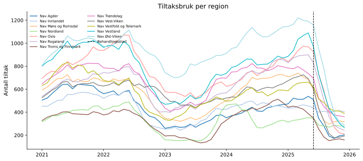
Arbeidstid neste tre måneder (atid3)
Deskriptiv statistikk
| Gjennomsnitt | Std.avvik | Min | Maks | |
|---|---|---|---|---|
| atid3 | 8.718 | 1.192 | 6.401 | 11.867 |
| Tiltaksnedgang (0–1) | 0.048 | 0.154 | 0 | 0.783 |
| Tiltak (antall) | 581.264 | 232.173 | 133 | 1222 |
Behandlingsvariabel per region (gjennomsnitt i post-perioden):
| Region | Gj.snitt nedgang (0–1) |
|---|---|
| Nav Vest-Viken | 0.557 |
| Nav Vestland | 0.522 |
| Nav Oslo | 0.502 |
| Nav Rogaland | 0.498 |
| Nav Agder | 0.496 |
| Nav Troms og Finnmark | 0.472 |
| Nav Øst-Viken | 0.466 |
| Nav Møre og Romsdal | 0.455 |
| Nav Trøndelag | 0.383 |
| Nav Vestfold og Telemark | 0.293 |
| Nav Nordland | 0.178 |
| Nav Innlandet | 0.097 |
Trender over tid
Regionene er delt i to grupper basert på median behandlingsintensitet (gjennomsnittlig tiltaksnedgang i post-perioden).
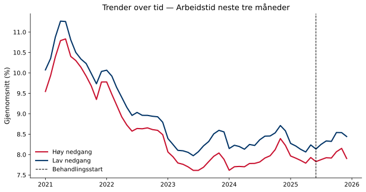
Regresjonsresultater
Koeffisienten for behandlingsvariabelen angir estimert effekt av å gå fra null til full tiltaksnedgang (behandlingsintensitet = 1) på indikatoren, i prosentpoeng. Et positivt fortegn betyr at regioner med større tiltaksnedgang hadde høyere indikatorverdier i post-perioden sammenlignet med kontrafaktum; et negativt fortegn betyr lavere verdier. Størrelsen angir den absolutte endringen i prosentpoeng ved full tiltaksnedgang. Signifikansstjerner og primær p-verdi basert på wild cluster bootstrap (Webb-vekter, G = 12, B = 4,999).
| Modell | Koeffisient | Std.feil (CR1) | t-stat | p (bootstrap) | p (asymptotisk) | 95% KI | Obs. | Clustere |
|---|---|---|---|---|---|---|---|---|
| Basis | -0.2116 | 0.2264 | -0.935 | 0.394 | 0.3701 | [-0.7099, 0.2867] | 720 | 12 |
| Sesongjustert | -0.4481 | 0.2214 | -2.024 | 0.2 | 0.068 | [-0.9354, 0.0392] | 720 | 12 |
Signifikansnivå (bootstrap): * p < 0,10 ** p < 0,05 *** p < 0,01
Gjennomsnittlig pre-periode-nivå: 8.8 % — koeffisienten tilsvarer en relativ endring på -5.1 %.
Minimum detekterbar effekt (80 % styrke, α = 0,05): ±0.68 pp.
Bootstrap-fordeling
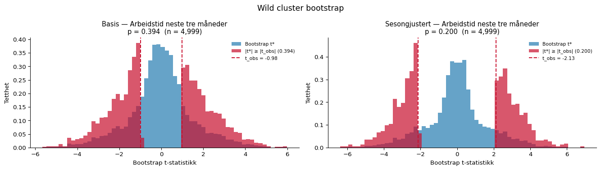
Faste effekter
Stolpediagrammene viser koeffisientene for de faste effektene i den sesongjusterte modellen. Røde søyler er signifikante på 5 %-nivå.
Entitet FE
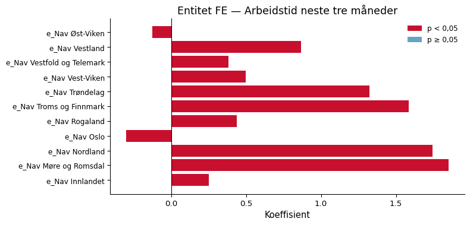
Tidspunkt FE
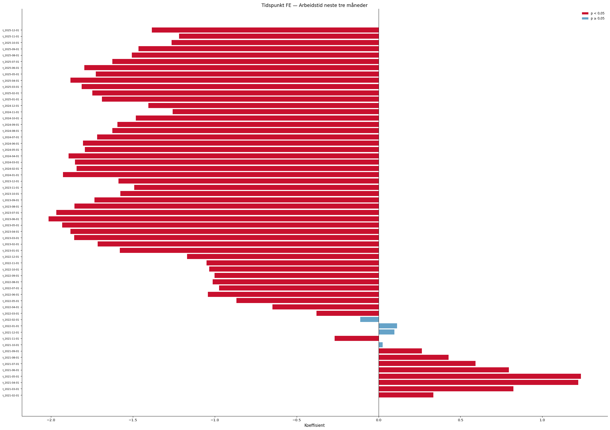
Eventstudie og parallell-trend-test
Eventsstudien samhandler periodevise indikatorer med en tidsinvariant intensitetsscore per region (maksimal tiltaksnedgang i post-perioden). Pre-periode-koeffisientene (τ < 0) bør ligge nær null dersom parallelle trender holder. Blå = basis, rød = sesongjustert modell.
Advarsel: pre-trend-testen er signifikant (F(10,11) = 2.92, p = 0.046), noe som svekker DiD-antakelsen.
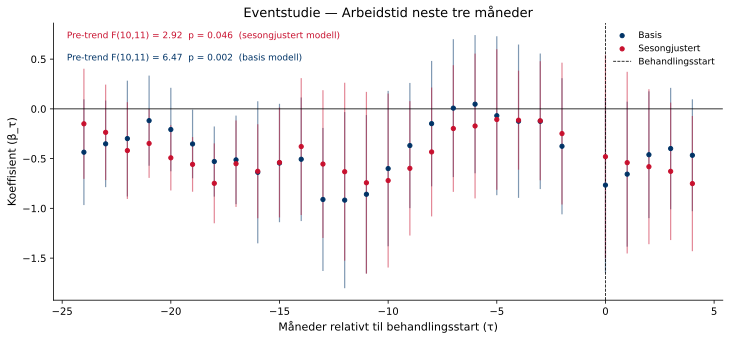
Placebotest (τ = −12)
Begge modeller re-estimeres med en falsk behandlingsstart tolv måneder tidligere, utelukkende i pre-perioden. Estimater nær null styrker antakelsen om at resultatene ikke skyldes pre-eksisterende trender.
Sesongjustert modell — placebo-koeffisienten er 0.7242 (p = 0.148). Dette er ikke signifikant, noe som styrker identifikasjonsstrategien.
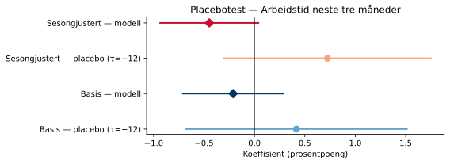
Leave-one-out robusthet
Begge modeller re-estimeres tolv ganger, én for hver region som droppes. Det skyggelagte feltet viser 95 %-konfidensintervallet for full-utvalgsmodellen.
Sesongjustert modell: koeffisienten varierer mellom -0.5499 til -0.2622 når én region utelates.
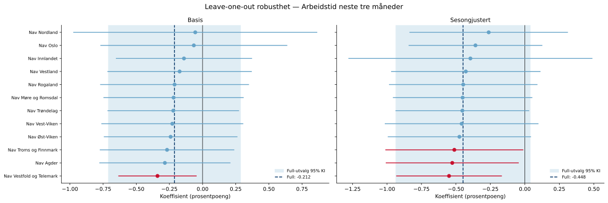
I jobb etter 3 måneder (jobb3)
Deskriptiv statistikk
| Gjennomsnitt | Std.avvik | Min | Maks | |
|---|---|---|---|---|
| jobb3 | 21.911 | 3.472 | 15.315 | 31.593 |
| Tiltaksnedgang (0–1) | 0.048 | 0.154 | 0 | 0.783 |
| Tiltak (antall) | 581.264 | 232.173 | 133 | 1222 |
Behandlingsvariabel per region (gjennomsnitt i post-perioden):
| Region | Gj.snitt nedgang (0–1) |
|---|---|
| Nav Vest-Viken | 0.557 |
| Nav Vestland | 0.522 |
| Nav Oslo | 0.502 |
| Nav Rogaland | 0.498 |
| Nav Agder | 0.496 |
| Nav Troms og Finnmark | 0.472 |
| Nav Øst-Viken | 0.466 |
| Nav Møre og Romsdal | 0.455 |
| Nav Trøndelag | 0.383 |
| Nav Vestfold og Telemark | 0.293 |
| Nav Nordland | 0.178 |
| Nav Innlandet | 0.097 |
Trender over tid
Regionene er delt i to grupper basert på median behandlingsintensitet (gjennomsnittlig tiltaksnedgang i post-perioden).
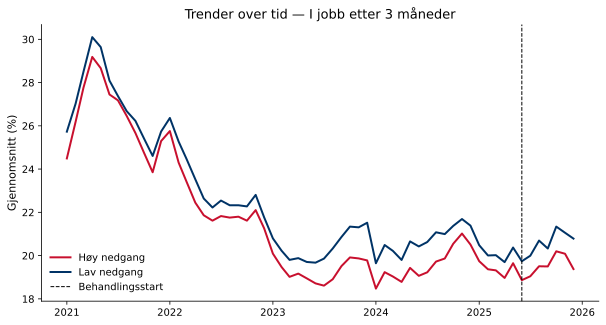
Regresjonsresultater
Koeffisienten for behandlingsvariabelen angir estimert effekt av å gå fra null til full tiltaksnedgang (behandlingsintensitet = 1) på indikatoren, i prosentpoeng. Et positivt fortegn betyr at regioner med større tiltaksnedgang hadde høyere indikatorverdier i post-perioden sammenlignet med kontrafaktum; et negativt fortegn betyr lavere verdier. Størrelsen angir den absolutte endringen i prosentpoeng ved full tiltaksnedgang. Signifikansstjerner og primær p-verdi basert på wild cluster bootstrap (Webb-vekter, G = 12, B = 4,999).
| Modell | Koeffisient | Std.feil (CR1) | t-stat | p (bootstrap) | p (asymptotisk) | 95% KI | Obs. | Clustere |
|---|---|---|---|---|---|---|---|---|
| Basis | -0.391 | 0.6178 | -0.633 | 0.552 | 0.5398 | [-1.7508, 0.9688] | 720 | 12 |
| Sesongjustert | -1.2417 | 0.5488 | -2.263 | 0.18 | 0.0449 | [-2.4497, -0.0338] | 720 | 12 |
Signifikansnivå (bootstrap): * p < 0,10 ** p < 0,05 *** p < 0,01
Gjennomsnittlig pre-periode-nivå: 22.2 % — koeffisienten tilsvarer en relativ endring på -5.6 %.
Minimum detekterbar effekt (80 % styrke, α = 0,05): ±1.69 pp.
Bootstrap-fordeling
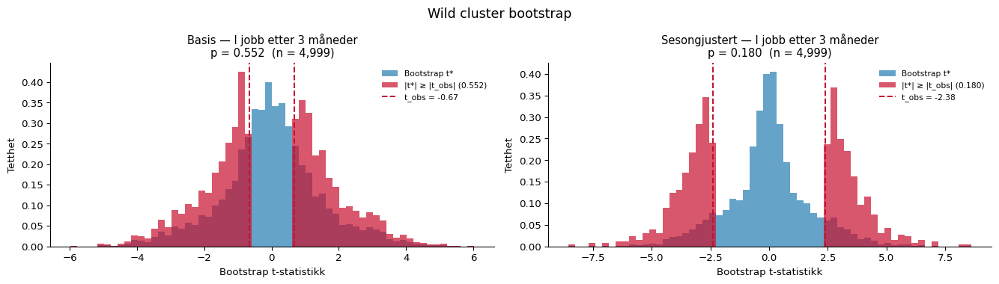
Faste effekter
Stolpediagrammene viser koeffisientene for de faste effektene i den sesongjusterte modellen. Røde søyler er signifikante på 5 %-nivå.
Entitet FE
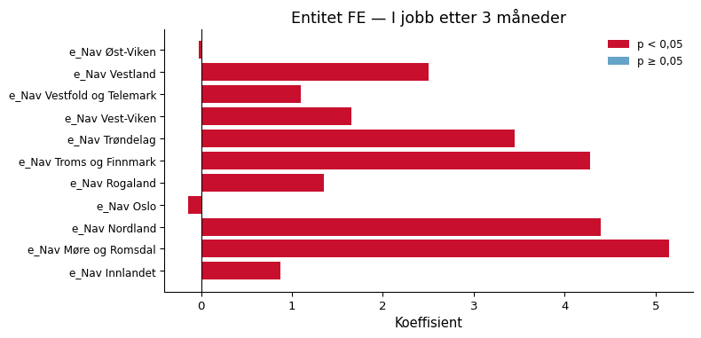
Tidspunkt FE
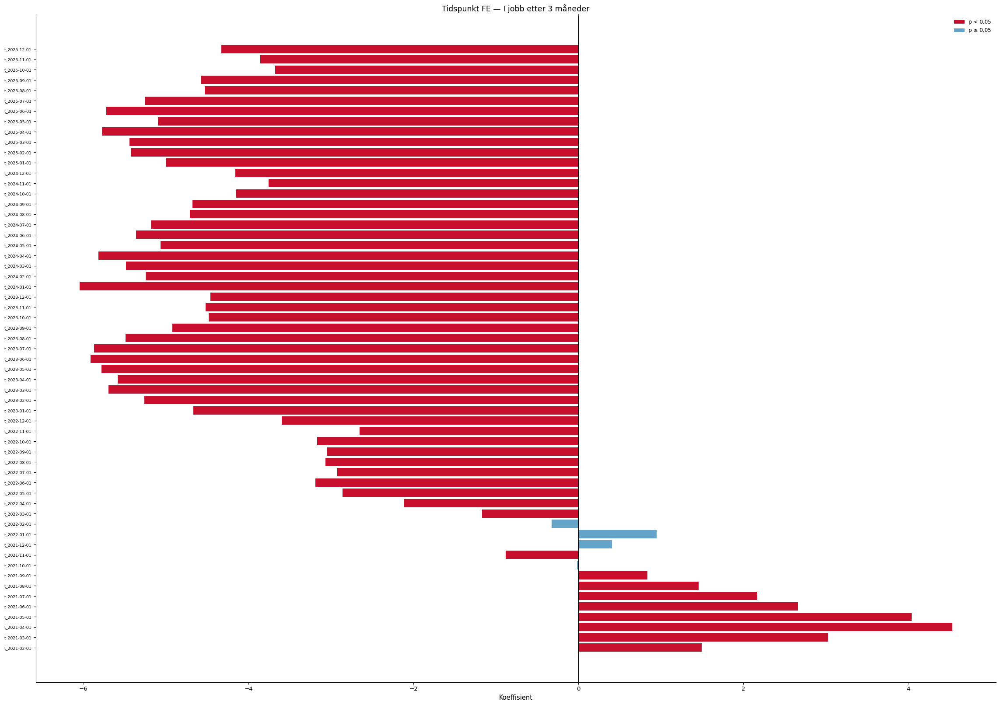
Eventstudie og parallell-trend-test
Eventsstudien samhandler periodevise indikatorer med en tidsinvariant intensitetsscore per region (maksimal tiltaksnedgang i post-perioden). Pre-periode-koeffisientene (τ < 0) bør ligge nær null dersom parallelle trender holder. Blå = basis, rød = sesongjustert modell.
Advarsel: pre-trend-testen er signifikant (F(10,11) = 7.05, p = 0.002), noe som svekker DiD-antakelsen.
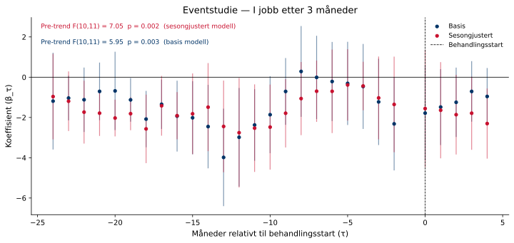
Placebotest (τ = −12)
Begge modeller re-estimeres med en falsk behandlingsstart tolv måneder tidligere, utelukkende i pre-perioden. Estimater nær null styrker antakelsen om at resultatene ikke skyldes pre-eksisterende trender.
Sesongjustert modell — placebo-koeffisienten er 1.7868 (p = 0.167). Dette er ikke signifikant, noe som styrker identifikasjonsstrategien.
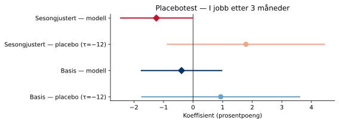
Leave-one-out robusthet
Begge modeller re-estimeres tolv ganger, én for hver region som droppes. Det skyggelagte feltet viser 95 %-konfidensintervallet for full-utvalgsmodellen.
Sesongjustert modell: koeffisienten varierer mellom -1.4554 til -0.8676 når én region utelates.
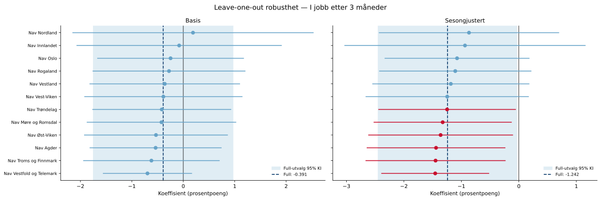
Rapporten er automatisk generert av analysepipelinen.